| Visual Representation | Insights |
|---|---|
| 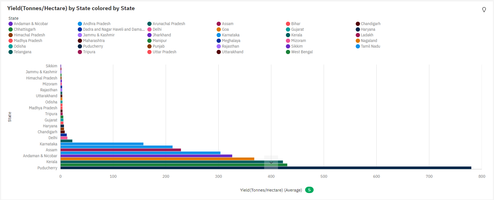 | This visualization gives details about states and their respective yield of crops. Over all states and states, the average of Yield(Tonnes/Hectare) is 79.43. Yield(Tonnes/Hectare) is very high in Puducherry state.
Cognos: Visualization1 |
| 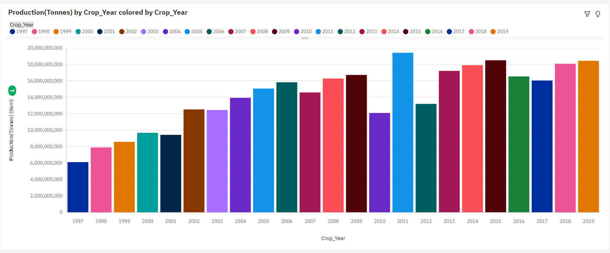 | This visualization gives details about production of crops with respect to the years. The sum of Production(Tonnes) is approximately 326 billion. For Production(Tonnes), the most significant value of Crop_Year is 2011, whose respective Production(Tonnes) values add up to approximately 19 billion.
Cognos: Visualization 2 |
| 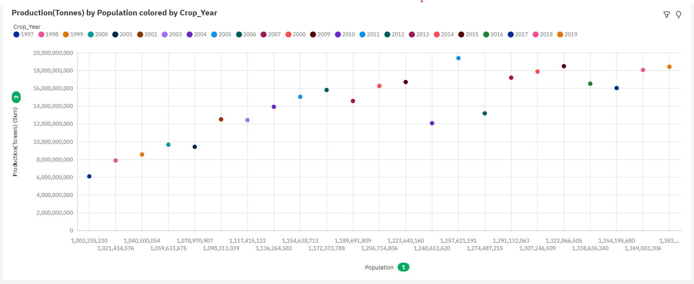 | This line chart visualization shows trend of crop production over the years, as we can see by increase in population of our country there is a subsequent increase in crop production.
Cognos: Visualization 3 |
Yield(Tonnes/Hectare) and Production(Tonnes) for State colored by different seasons
| Visual Representation | Insights |
|---|---|
| 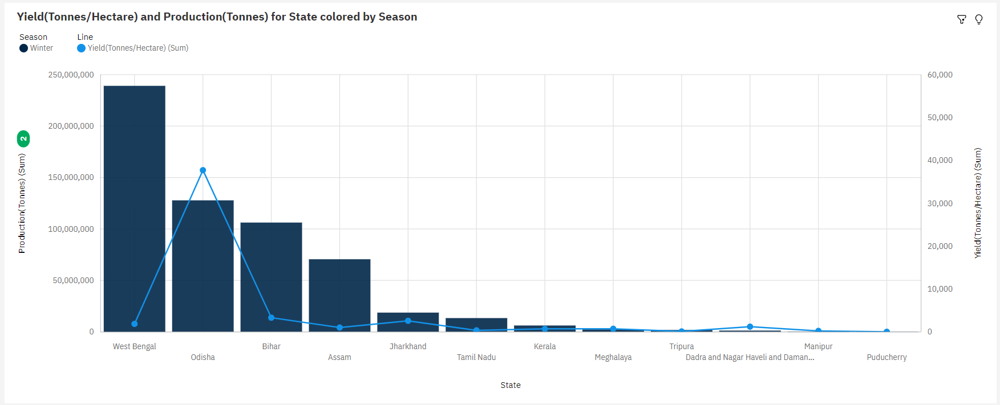 | For Production(Tonnes) in winter season, the most significant value of State is West Bengal, whose respective Production(Tonnes) values add up to over 239 million. Yield(Tonnes/Hectare) ranges from 17.08, in Puducherry, to nearly 38 thousand, in Odisha. Cognos: VIsualization 1.1 |
| 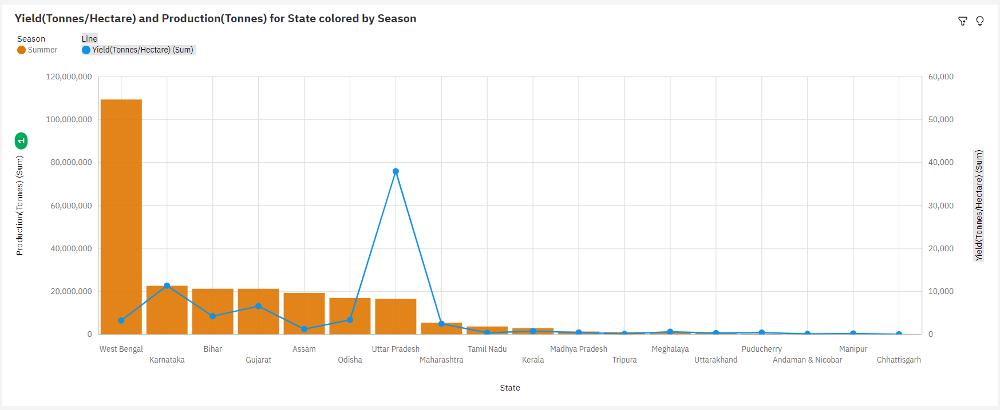 | This visualization gives details about production of crops with respect to the years. The sum of Production(Tonnes) is approximately 326 billion. For Production(Tonnes), the most significant value of Crop_Year is 2011, whose respective Production(Tonnes) values add up to approximately 19 billion.
Cognos: Visualization 1.2 |
| 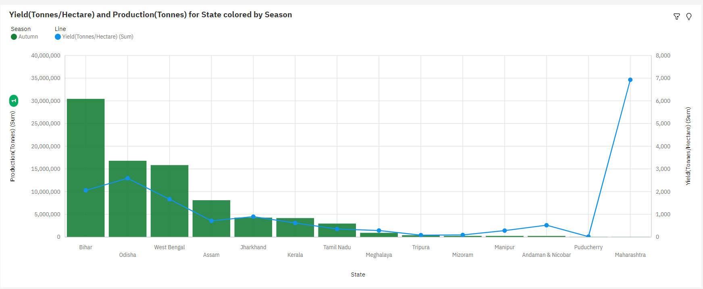 | For Production(Tonnes) in autumn season, the most significant value of State is Bihar, whose respective Production(Tonnes) values add up to over 30 million. Yield(Tonnes/Hectare) ranges from 15.99, in Puducherry, to nearly seven thousand, in Maharashtra
Cognos: Visualization 1.3 |
| 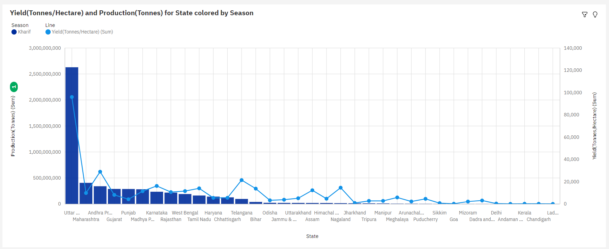 | For Production(Tonnes) in kharif season, the most significant value of State is Uttar Pradesh, whose respective Production(Tonnes) values add up to over 2.6 billion. Yield(Tonnes/Hectare) ranges from 71.55, in Ladakh, to over 96 thousand, in Uttar Pradesh.
Cognos: Visualization 1.4 |
| 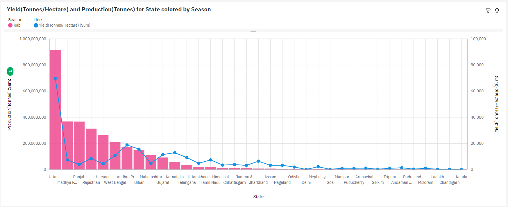 | For Production(Tonnes) in rabi season, the most significant value of State is Uttar Pradesh, whose respective Production(Tonnes) values add up to over 914 million. Yield(Tonnes/Hectare) ranges from 10.67, in Kerala, to almost 70 thousand, in Uttar Pradesh
Cognos: Visualization 1.5 |
Highest crop production by each season and whole year.
| Visual Representation |
|---|
Highest Crop Production In Summer 
|
| Highest Crop Production In Autumn 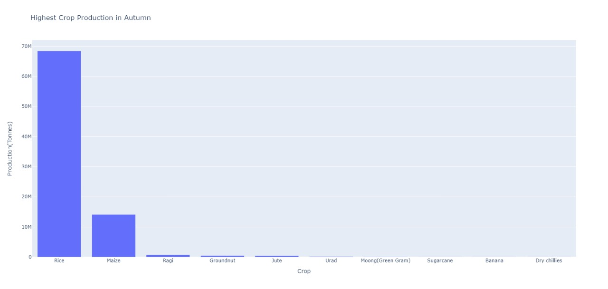 |
Highest Crop Production In Rabi 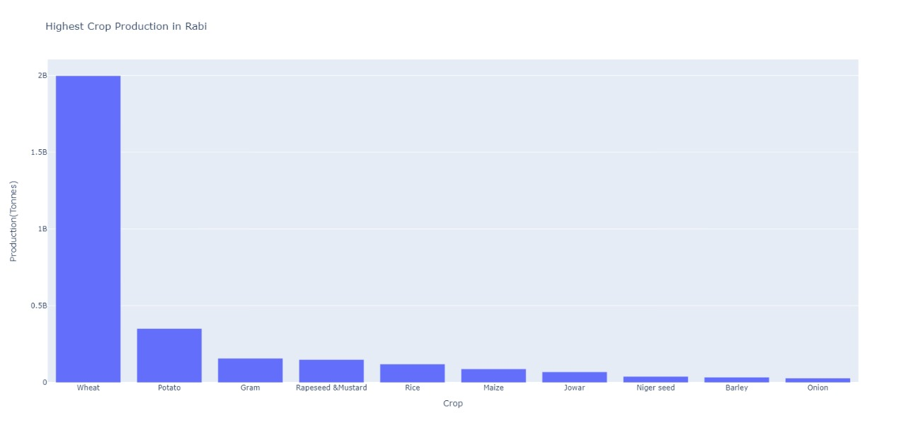 |
Highest Crop Production In Kharif 
|
Highest Crop Production In Winter 
|
Highest Crop Production In Whole Year 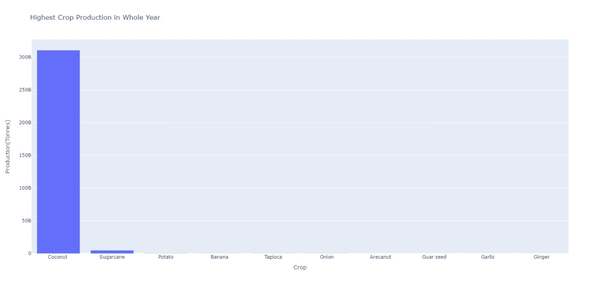 |
| Visual Representation | Insights |
|---|---|

|
This pie chart visualizes the crop production by season. As we can see, in kharif season the crop production is highest which stands at 58% Cognos: VIsualization 2.1 |
| 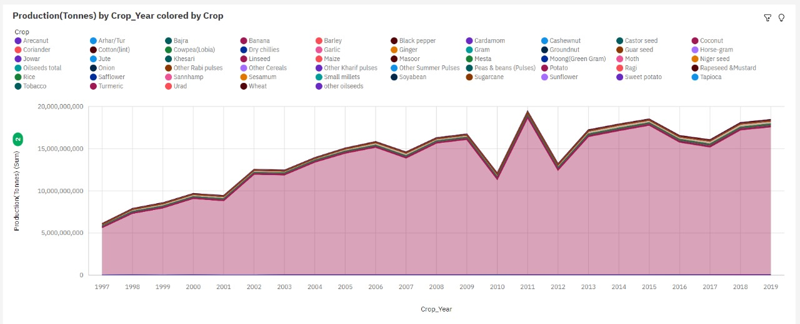 | This area chart gives details about crop production by crop year for different types of crops. Production(Tonnes) is unusually high when Crop is Coconut. Cognos: Visualization 2.2 |
| 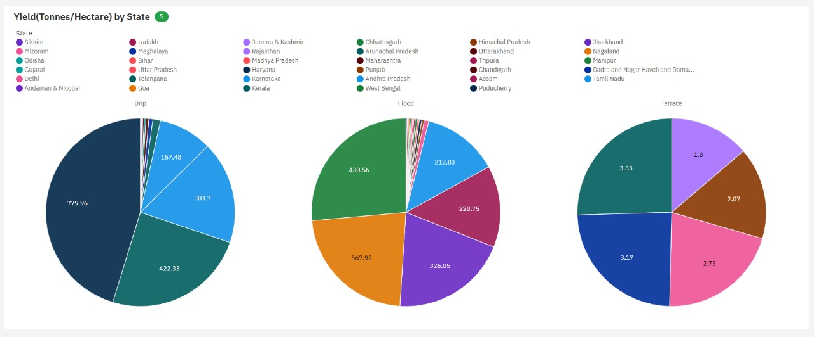 | This visualization gives insights about yield by state for different types most commonly used irrigation methods used in each state. In drip irrigation, Puducherry has the highest yield, in terrace irrigation, Arunachal Pradesh has the highest yield and in flood irrigation, West Bengal has the highest yield. Also it is seen that yield due to terrace irrigation is much lower than yield in flood and drip irrigation.
Cognos: Visualization 2.3 |
| 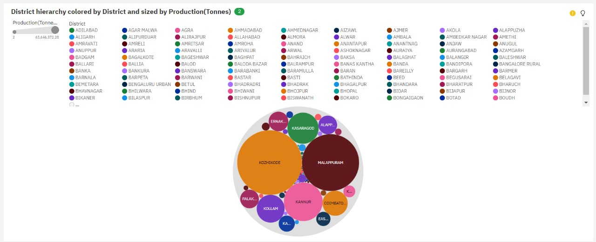 | This visualization is about district and their respective production. Production(Tonnes) is unusually high when District is KOZHIKODE and MALAPPURAM. BILASPUR is the most frequently occurring category of District with a count of 1244 items with Production(Tonnes) values. Cognos: Visualization 2.4 |
| 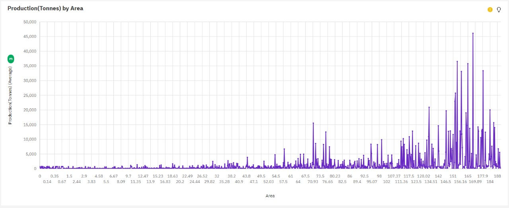 | This visualization shows insights about area and production. As the area increases, production also increases, so we can say that there is a corelation between crop cultivation area and production. Cognos: Visualization 2.5 |